Ydby (oder Flarup)
Granit
Höhe: ca. 125 cm
Breite: ca. 60 cm
Runenhöhe: ca. 20 cm
Runeninschrift :
Thorgisl setzte - zusammen mit den Söhnen des Lefi - den Stein an diesen Ort zum Andenken an Lefi.
Runenstein - Bruchstück 2 - Seite
17 - Ydby (oder Flarup) - Letztes Update 05.08.2025
Listennummer : DR 149 / DK NJy 41
Navidaten Museum: 56.95395 8.69061 oder: Jernbanegade 11, 7700 Thisted
Navidaten Standort der Runensteinkopie: 56.42593 8.23535 oder: Ydbyvej 170B, 7760 Hurup/Thy
Transliteration:
Seite A: [þurkisl : sati : au(k) (:) | suniR (:) lifa : i : staþ : þa|nsi :
Seite B: stin : uftiR : lifa]
Museum Thy
Runenstein Kopie
Am Samstag, 24.06.2023, öffnete das neue Museum "Museum Thy - Jernbanegade 11 - 7700 Thisted" seine Pforten.
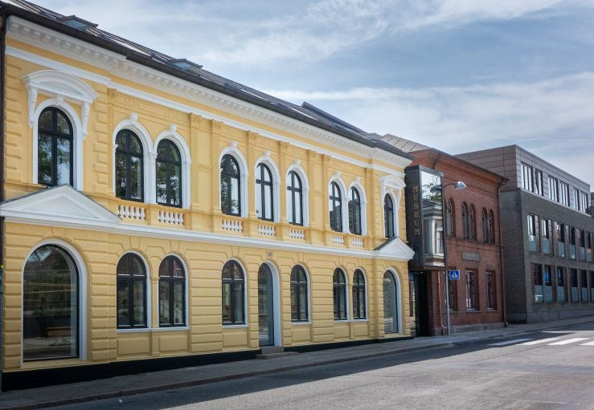
Bildquelle: Museum ThyAuf deren Webseite hieß es in Ankündigung auf die zukünftige Ausstellung z.B. "...Du kan også se nærmere på en vaskeægte runesten og høre fortællinger om vikinger, prinsesser og en helgenkåret præst..." - übersetzt: "...Sie können sich auch einen echten Runenstein genauer ansehen und Geschichten über Wikinger, Prinzessinnen und einen heiligen Priester hören ..." Das sind doch mal tolle Neuigkeiten, der Runenstein durfte sein Lager in Kopenhagen verlassen und wird nun endlich der Öffentlichkeit zugänglich gemacht! Aber ich habe von mir aus immerhin knapp 1100 km bis zum Museum! Wer weiß, wann ich den dann zu sehen bekomme! Aber ich kenne da jemand, der mir, oder über die dort lebende Verwandtschaft, wenigstens mal vorab Fotos besorgen könnte.
Das hat sich nun - 28.05.2024 - tatsächlich bewahrheitet - Herzlichen Dank Jette! Die drei Bruchstücke habe ich auf der nachfolgenden Zeichnung von Søren Abildgaard (*18.02.1718 - 02.07.1791, Zeichner, Kupferstecher und Geologe)
 Bildquelle:
Jellingprojektet - Lizenz:
Public Domain -
http://www5.kb.dk/images/billed/2010/okt/billeder/object444188/da/
Bildquelle:
Jellingprojektet - Lizenz:
Public Domain -
http://www5.kb.dk/images/billed/2010/okt/billeder/object444188/da/
aus dem Jahr 1767 - näheres siehe unten - rot umrandet.
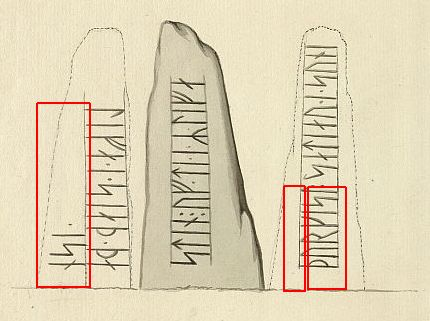
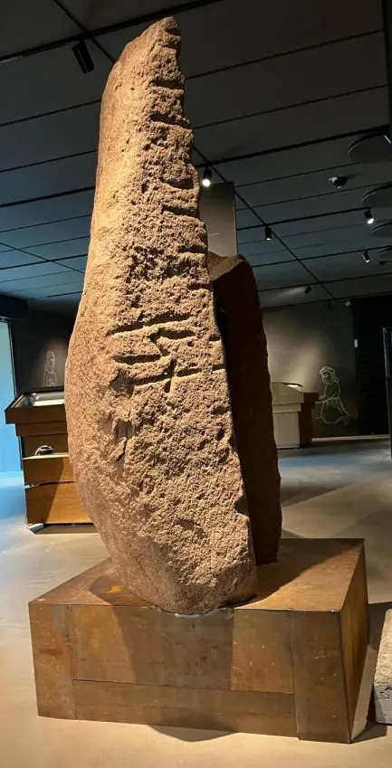
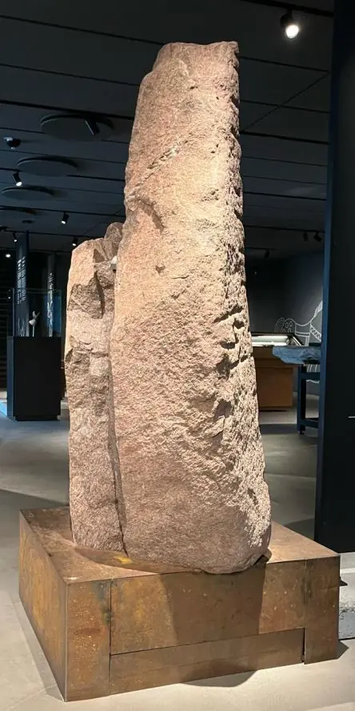
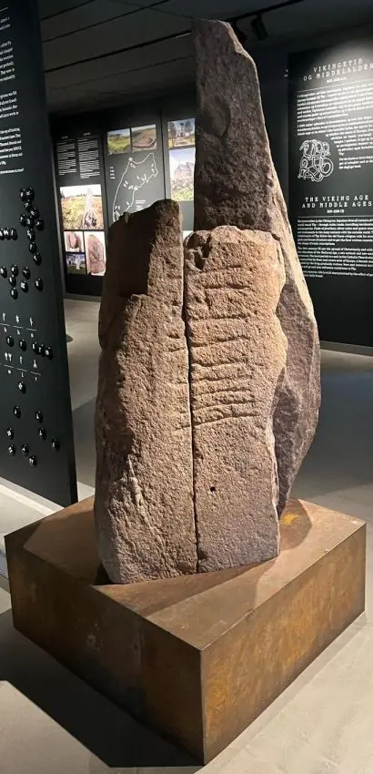
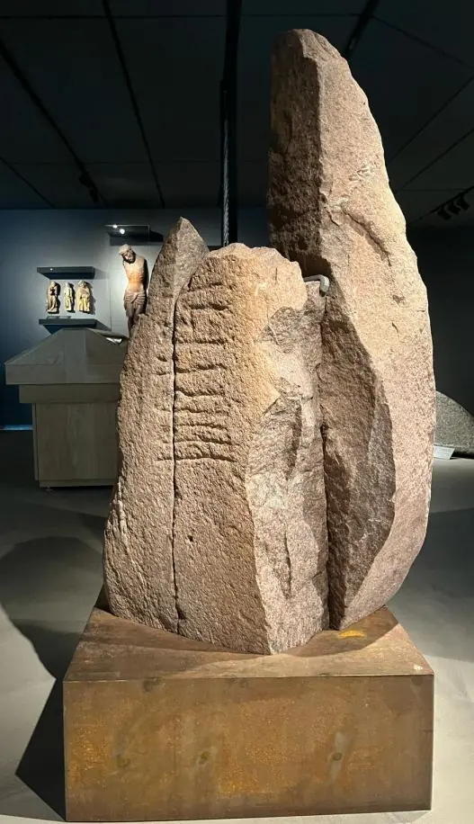
Allerdings ist auf der linken Steinhälfte der zwei kleineren Stücke noch ein kleiner Teil der Inschrift links um's Eck rum zu sehen - siehe unten auf dem 3. Foto von Roberto Fortuna. Von daher habe ich das Museum Thy per E-Mail kontaktiert und um entsprechende Fotos zur freien Verwendung auf meiner (nicht kommerziellen) Webseite gebeten. Von Charlotte Boje H. Andersen bekam ich heute - 10.06.2024 - diese Fotos übermittelt - Tusind tak!
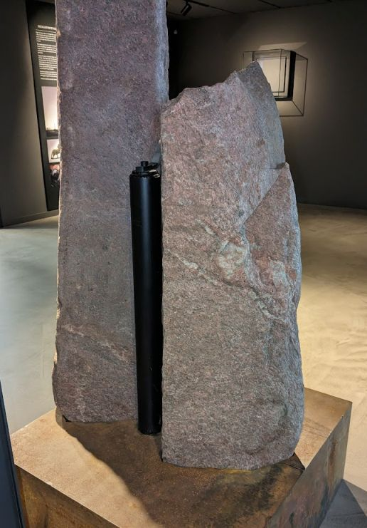
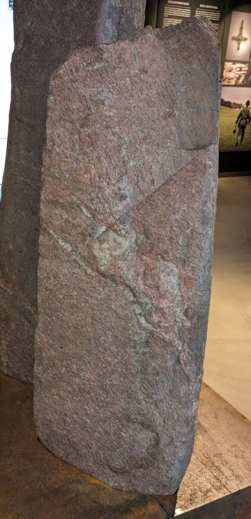
Da die Runen hier kaum zu erkennen sind, wird das natürlich gerne übersehen. Dieser Bereich gehört dann in der o.a. Zeichnung zu der mittleren Steinseite und beinhaltet den Inschriftteil "...Stein für..."
Im Herbst 2015 wandte sich der Landwirt Ole Kappel - Burhøjgårdvej 1, Boddum, 7760 Hurup Thy - an Poul Mikkelsen, Archäologe am Museum Thy, der im Zusammenhang mit der Verlegung von Kabeln eine archäologische Voruntersuchung auf dessen Gelände durchführte, auf dem der Søndergaard einst gelegen hatte. Poul Mikkelsen wurde eingeladen, sich eine Steinbank aus rötlichem Granit - Maße: 102 x 23 x 20 cm - anzusehen, auf der lotrechte Einritzungen erkennbar waren. Er stellte anschließend Kontakt zur Runologin Lisbeth M. Imer (*1973) vom Nationalmuseum her.
Bei ihrer Inspektion, die erst am Montag, dem 14. März 2016, erfolgte, wurde geklärt, dass man ein Fragment des Ydby-Steins geborgen hatte, nämlich den Teil, der in Søren Abildgaards (*18.02.1718 - 02.07.1791, Zeichner, Kupferstecher und Geologe) Zeichnung den größten Teil des Namens "þurgisl" (Thorgisl) wiedergab. Auf dem Fragment war größtenteils nur der rechte Teil der Runen erhalten geblieben und es bedarf deshalb einer gewissen runologischen Schulung und Erfahrung, um feststellen zu können, dass es sich tatsächlich um Runen handelte. Daher ist es nicht so verwunderlich, dass der Stein mehrere Jahre lang ohne besondere Aufmerksamkeit auf der Terrasse gelegen hatte. Ole Kappel erwähnte nun, dass er einige Steine aus demselben Haufen wie das Runensteinfragment genommen und sie auf einer Terrasse vor dem Haus verwendet hatte.
Nun wurden einige dieser Steine des Bodenbelags, die in Form und Struktur dem Runensteinfragment ähnelten begutachtet, um Spuren von Runen zu entdecken. Es gelang darüber tatsächlich den linken Teil der Erstfundes zu erkennen. Die Gesamtlänge der Runenspuren auf diesem Fragment stimmte genau mit der Länge der Inschrift auf dem Teil des ersten Steins überein. Maße 111 x 25 x 28 cm.
Inzwischen waren Ole Kappels Söhne Anders und Kristian nach Hause gekommen. Die beiden waren auch gespannt, ob die beiden Steinstücke nun auch wirklich zusammenpassen und sie boten an, den 2. Stein aus seinem Platz herauszustemmen. Nach der Herausnahme stellte man fest, dass sich auch auf der Unterseite dieses Fragments Runen befanden. Daufhin entstand bei allen Beteiligten der große Drang, weitere Fragmente zu finden. Ob noch weitere Teile des Runensteins auf der Terrasse lagen? Wieder mit der Hilfe von Anders und Kristian wurden einige der Steine auf der Terrasse, die den beiden anderen Fragmenten verdächtig ähnelten, angehoben und ausführlich begutachtet. Tatsächlich fand sich darüber in dem Terassenbelag noch ein großes Bruchstück mit deutlichen Runen auf einer Seite - siehe Foto unten - mit den Maßen 149 x 31 x 37 cm.
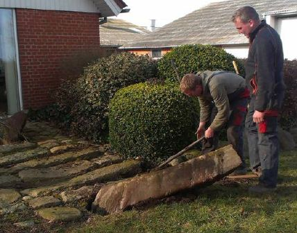
Fotografin: Lisbeth M. Imer - in: "En genfundet runesten" - siehe unten - Bild von mir zugeschnitten - 04.06.2024Es zeigten sich die großen und sehr deutlichen Runen "nsi", die Teil des Wortes "þansi" sind und auf dem Fragment genau die gleiche Position wie auf Abildgaards Zeichnung haben. Es blieb dann aber letztlich bei diesen drei Bruchstücken, aber immerhin! Die Runologin Imer schätzt, dass der Runenstein in acht Teile gespalten wurde und nun noch etwas mehr als die Hälfte verschwunden bleibt. Sicherlich eine ungemein spannende Geschichte für alle Beteiligten.
Die Lesung der drei aufgefundenen Bruchstücke wäre dann wie folgt:
Seite A → þurkisl : - --- (:) - : s-(a)(þ) -- | : nsi :
Seite B → ---(n) : (u)
Informationsquelle: "Historisk Årbog for Thy og Vester Han Herred, 2016", Seiten 7-19, Artikel "En genfundet runesten" von Charlotte Boje H. Andersen und Lisbeth M. Imer.
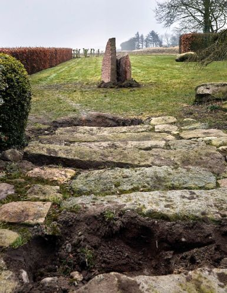
Bildquelle: Foto vom 17.03.2016 von Fotograf Roberto Fortuna - Digitale Sammlung Nationalmuseum Kopenhagen - Lizenz: CC-BY-SAZuvor waren die Bruchstücke in dem von ihm in den 1980er Jahren aufgekauften Søndergaard - ca. 8 km entfernt gelegen - verbaut gewesen. In den 1990er Jahren hat er den veralteten Hof dann abreißen lassen. Etliche große Abbruchsteine wurden von dort zu seinem aktuellen Bauernhof verbracht, wo nun diese drei Runensteinfragmente auftauchten. Ein Bruchstück wurde wohl vormals als Schwellenstein eines Pferdestalls genutzt. Davon zeugen vier Bohrlöcher, in denen der Türrahmen befestigt wurde, und erhebliche Abnutzungserscheinungen an der Oberfläche zwischen diesen Löchern, vermutlich durch mehrere hundert Jahre darübergehende eisenbeschlagene Pferdehufe (Hufeisen).
1823 war der Flarupgaard geteilt worden und in den Jahren zw. 1825 und 1829 wurde in einem Landteil südlich davon der Søndergaard erbaut. Beide Höfe lagen nur unweit des ursprünglichen Standortes des Runensteins entfernt - beim Hellehøj - siehe diese historische Landkarte.
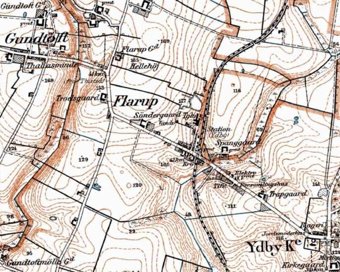
Durch Hinweise aus der Bevölkerung, die nach dem Fund beim Museum eingingen, besteht die Annahme das andere Bruchstücke beim Bau der Eisenbahn Verwendung fanden. Ab 1882 wurde die Bahnlinie Tisted-Oddesund gebaut.
Die neu entdeckten Runensteinbruchstücke wurden dann nach Kopenhagen gebracht und waren seit dem 28.01.2017 bis ca. Januar 2018 im Nationalmuseum in Kopenhagen im Rahmen der Ausstellung "Danefæ" zu sehen. Die Runensteinteile befanden sich dann in einem Lagerraum außerhalb von Kopenhagen. Im Rahmen einer Wikinger Ausstellung im Sommer 2023 wurden die Bruchstücke ins Thisted Museum in der Jernbanegade 4 in 7700 Thisted gebracht und dort dauerhaft aufgestellt. Auf Nachfrage erhielt ich vom Museum Thy noch diese Info: Im Museum Thy hat der Stein die Inventarnummer THY 6318 x1-3 und im Nationalmuseum die Inventarnummer C 41979, j.nr. 16/02361.
Unmittelbar nach der Entdeckung wurden diese Fotos von Henrik Schilling und Lisbeth M. Imer (*1973, Runologin am Nationalmuseum Kopenhagen) vom Nationalmuseum Kopenhagen gemacht.
Bilderquelle - Sie unterliegen alle der Lizenz CC BY 3.0
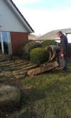 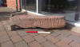 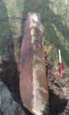 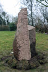 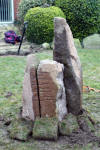
Der Runenstein wird auf die Zeit zwischen 970 und 1020 datiert. Die Inschrift verteite sich wohl ehemals auf drei Steinseiten. Sie begann am unteren Rand der Vorderseite (Seite A), setzte sich über die Oberseite des Steins fort und wurde somit auf der Rückseite des Steins nach unten fortgeführt.
In dem 1643 erschienenen großen Werk von Ole Worm (*13.05.1588 - 31.08.1654, Arzt, Universalgelehrter und der Begründer der Runologie)
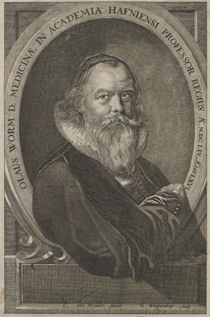
Bildquelle: Det Kgl. Biblioteks billedsamling - Lizenz: Public Domain"Danicorum monumentorum Libri Sex" - eine Sammlung der damals bekannten Runeninschriften im Lande, hat der Runenstein keinen Eingang gefunden. Demnach müsste er sehr wahrscheinlich erst danach entdeckt worden sein.
Der Bischof von Aalborg, Jens Bircherod (*15.01.1658 in Odense - 06.12.1708 in Aalborg),
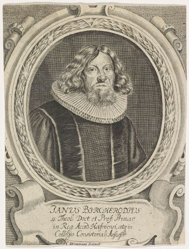
Bildquelle: Künstler: Conrad Waumans (19.06.1619-1681) Belgischer Kupferstecher - 1690 - Riijskmuseum Amsterdam - Lizenz: Public Domainschrieb sorgfältig alles auf was er auf seinen vielen Besuchen in seiner Diözese hörte und sah und er hat unter dem Datum 06. September 1708 einen Tagebucheintrag angelegt, wonach er diesen Stein bei einer Rundreise in Flarup, in der Gemeinde Ydby, aufrecht stehend und mit Runen geziert gesehen hätte. Bewohner der Gegend hätten ihm aber erklärt, dass er einst auf einem Hügel, stand und von dort weggeschleppt wurde. Er gibt weiter an, dass er sich bemüht hätte die Inschrift zu lesen, sie aber nicht wirklich verstand, da ihm nicht genug Zeit dafür blieb, weil er seine Reise fortsetzen musste. Es blieb bei diesem einen Besuch, den drei Monate später verstarb er bereits.

Quelle: J. Bircherods historisk-topographiske Dagbøger, von Christian Molbech, 1846, Uddrag af Biskop Jens Bircherods historist - biographifle Dagboger for Aarene 1658I708, S. 538.
Schon dessen Vorgänger im Amt des Bischofs - Mathias Nielsen Foss (*12.10.1627 - 08.07.1683, Bischof zw. 1672-1683) und Henrik Bornemann (*05.01.1646 - 31.12.1710, Bischof zw. 1683-1693) - haben wohl ebenfalls von der Existenz dieses Runensteins gewusst und ihn vor Ort gesehen.
In der Königlichen Bibliotek zu Kopenhagen - Den sorte Diamant - hat sich unter "Thott 1445 kvart" von Albert Thura (*06.10.1700 - 10.03.1740, dänischer lutherischer Theologe und Literaturwissenschaftler) die Handschrift "Aaalborg Stifts Beskrivelse ved Albert Thura", erschienen um das Jahr 1735, bewahrt. Dieses Werk habe ich anlässlich meines Studienaufenthaltes in Kopenhagen am Mittwoch, 28.09.2022, in Händen gehalten. Auf der S. 558 findet sich dieser Eintrag:
"Paa Flarup March i Ydbye Sogn udi et Leed tvende Steene med Runnebogstaver, hvorpaa disse Bogstaver ere kendelige:
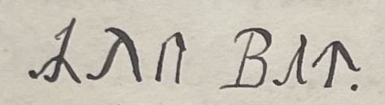
: Olu Bat, som er en gammel Herre, ved Navn Ole Vat, der ligger begraven i en Høj næst ved, hvorfra disse Steene ere tagne".
Übersetzt: "Auf dem Flarup Marschland in der Gemeinde Ydby steht ein Stein mit Runenbuchstaben, auf denen diese Buchstaben erkennbar sind: : Olu Bat, ein alter Herr namens Ole Vat, der in einem Hügel an dem Ort, an den diese Steine gebracht wurden, begraben liegt.
Davon habe ich diese Fotografien gefertigt.
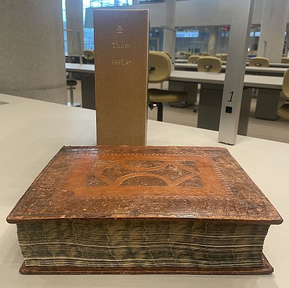
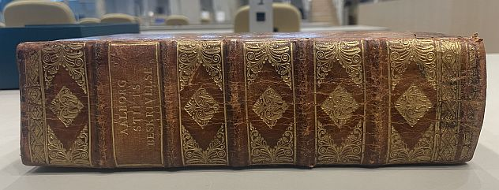
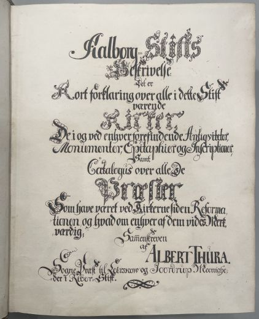
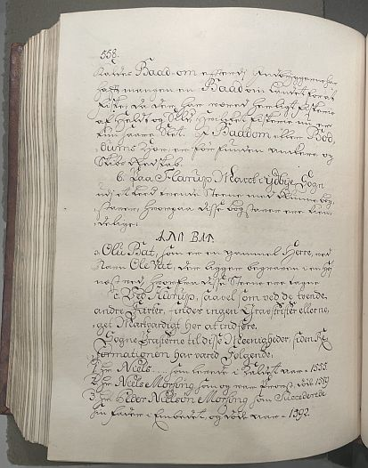
Beim Ableben des dänischen Reichsrats und Grafen Otto Thott (*13.10.1703 - 10.09.1785, Premierminister, Generalsekretär und Buchsammler),
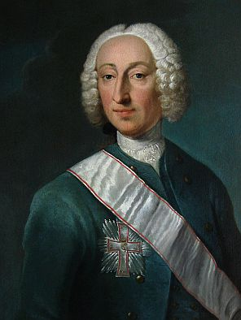
Bildquelle: Wikipedia (Gemälde von Andreas Pedersen Brünniche) - Lizenz: Public Domainder auf seinem Schloss Gavnø bei Næstved und in seinem Haus in Kopenhagen, dem Palais Thott die größte Privatbibliothek Dänemarks mit etwa 140.000 Bänden, darunter 6.000 Inkunabeln unterhielt, kamen die von ihm gesammelten 4.000 Handschriften, darunter auch dieses Werk und die älteren Druckwerke seines Nachlasses aus der Zeit bis um 1530 in den Bestand der Königlichen Bibliothek.
In der digitalen Sammlung des Nationalmuseums Kopenhagen findet sich diese erste Zeichnung des Runensteins, die von Pfarrer Sebastian Peder Andresen Opitius (Eintrag auf der 2. -doppelten- S. 20 in der pdf / Opitz - *14.05.1713 - ? - nach 1766) im Jahr 1738 angefertigt wurde - Lizenz: Public Domain. Er gibt die Position des Steins sorgfältig durch die Zusätze " Ost-, Nord-, Süd-, Westseite" an. Außerdem ist bei ihm die Leserichtung, beginnend im linken Bereich (Linie A) von unten nach oben und der Fortsetzung im rechten Bereich erkennbar. Genauer gesagt ist in der rechten Steinzeichnung die rechte Linie (Fortsetzung von Linie A) von oben nach unten und links davon die dort verlaufende Linie B von unten nach oben zu lesen.
Seite A - þurkisl : (s)[ati : auk : suniʀ : l](i)(f)(a) (:) (i) : s(t)(a)(þ) [:] (þ)(a) | : nsi :
Seite B - (s)(t)(i)(n) : (u)[ftiʀ : lifa]
Opitius war erst ab 04.09.1744 (bis 1780) Pfarrkaplan (Angestellter Hilfspriester beim Priester in Boddum, Ydby mit Hurup), zum Zeitpunkt als der die Zeichnung anfertigte wohl 25 Jahre alt und stammte ursprünglich aus dem Herrenhof Lergrav (DK-7490 Aulum, Lergravvej 26, Jütland), der von seinem Vater, Anders Frederik Opitius im Jahr 1727 für 6098 Reichstaler gekauft worden war. Warum er über den Runenstein berichtet und nicht der damalige Priester in Ydby, Oluf Holger Tott Saxesen Ascanius (*18.09.1706 - 16.08.1785, ab 1733 bis 1784 Pfarrer in Boddum, Ydby und Hurup), ist nicht überliefert. Die Tatsache, dass er 1738 den Runenstein und die Gegend so gut kannte, lässt sich vielleicht durch häufige Besuche bei Ascanius erklären, der mit einer Verwandten (Schwester?) von ihm verheiratet war: Dorothea Kirstine Opitius (*1710 - 1797). Die Familie Optiz oder Opitius stammt ursprünglich aus Buntzlau in Schlesien - um 1629.
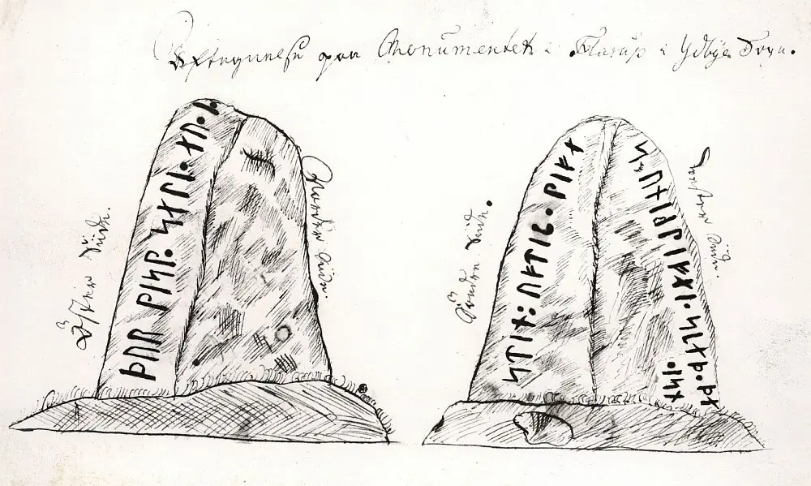
In dem Standardwerk "Danmarks Runeindskrifter, Jacobsen/Moltke, 1942, Nr. 149, S. 186" wird diese Zeichnung nicht erwähnt. Über die Abhandlung von Anders Bæksted (*16.08.1906 - 18.06.1968, Museumsinspektor) mit dem Titel "Thylands Runestene", erschienen in "Landet mod Nordvest - Thy og Vester Han Herred, Bidrag til Belysning af Egnens Forhold i Fortid og Nutid, Bind 1, 1946", Seite 69-84, wird deren Geschichte aber umfassend aufgehellt - siehe unten.
Der Runenstein, auch Flarup-Runenstein genannt, fand dann erstmals im Jahre 1741 Eingang in die gedruckte Literatur in Erik Pontoppidan (der Jüngere, *03.09.1698 - 20.12.1764, dänisch-lutherischer Bischof, Theologe und Autor)
 Bildquelle:
Wikipedia -
Lizenz:
Public Domain
Bildquelle:
Wikipedia -
Lizenz:
Public Domain
großem Werk "Marmora Danica selectiora sive Inscriptionum" - S. 349. Darin heißt es eingangs: "In campo Flarupenſi paroecia Udbye obvius eft lapis Runicus, Wormia ignoratus"
Übersetzt: "Im Tal der Gemeinde Flarupenſi in Udbye befindet sich der Runenstein, Ole Worm Unbekannt".
Dann findet sich u.a. noch eine Größenangabe zu dem Stein: "Qvoad mensuram saxi, binas & qvod excedit , ulnas longum , dimidiam latum deprehenditur."
Übersetzt: "Was das Maß des Steins betrifft, so wird festgestellt, dass er zweieinhalb Fuß lang und einen halben breit ist." (umgerechnet ca. 125 cm).
Er bekam vom o.a. Pfarrer die Zeichnung zugesandt und schreibt dazu noch (übersetzt): "...da die Zeichnung ungenau ist, sehen wir davon ab sie hier zu bringen... - und weiter: "über die darauf befindlichen Zeichen können wir nur 3 Wörter erkennen »Thor satte Stenen = Thor hat den Stein gesetzt«."
Diese Zeichnung von Pfarrer Sebastian Peder Andresen Opitius fand sich später per Zufall in der Hinterlassenschaft von Erich Christian Werlauff (*02.07.1781 - 05.06.1871, dänischer Historiker - link-LIVES),
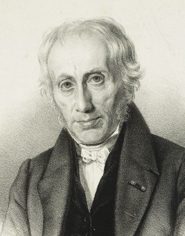
Bildquelle: Det Kgl. Biblioteks billedsamling - Lizenz: Public Domaingenaugenommen in "Werlauffs Manuskripter Nr. 11" die heute in der Königlichen Bibliothek in Kopenhagen aufbewahrt werden (siehe: E. Gigas, Band 1, S. 101-102), und ist durch den nachfolgenden, sehr aufschlussreichen Text zu seiner Historie ergänzt:
"Aftegnelse paa Monumentet i Flarup i Ydbye Sogn.
I. Skriften derpaa
angaaende, da er det her saa accurat med Puncter og Bogstaver optegned, som
nogenlunde af noget Menneske kand skee; det begynder paa den østre Siide og
continuerer om paa dens vestre, saa at XXXXXXXX etc. følger oven paa efter
hinanden, een hver Bogstav er een Qvarteer lang.
II. Høiden af Steenen er 2
Allen og 1 /10 Deel oven Jorden og nok een stoer Qvarteer i Jorden. Stenen er
nogenleedes regulairkantet paa de 3 Siider, men paa dend nordere Siide gandske
ujævn. Breden paa Steenen, hvor dend er glat, er nesten ½ Allen.
III. Stædet,
hvor dend er tagen fra, er een Agger, som løber med dend Sæed Mark i Øster og
Vester; hvilken Agger kaldes af Bønderne Hellesagger, det Sted er een halvanden
100 Skrit Østen for det Stæd den nu staaer; i Aggeren, nemlig Hellisagger (som
virkelig betyder Helligagger), hvor Steenen blev tagen, var een Grav giort paa
een Snees Skrit, som rundt om var opsat som een Jordkiælder med Kampesteene og
meget merkelig at denne Grav var saa got som i en Triangel smal i dend østre og
bred i dend vestre Ende, i Bunden var pikket med middelmaadig Steene, hvilke
Steene allesammen ere opbrækkede for Aggerens Pløining Skyld og forbrugt; norden
for Stædet, som Steenen er tagen fra, een Par Agger bred eller 50 Skrit, er een
liden Høy, kaldes Helle Høi (NB enten af hellig, som jeg skrev heroven om, eller
og maaskee af Helle, Helene etc. eller og af Hel, Døden, fordi det haver været
en Begravelses Sted), som er een 4 Allen høy og forhen rund, i hvilken siiges at
være fundet een Gryde med Aske udi, men ingen af de gl. Mænd i Byen veed det
vist uden efter Beretning; af denne liden Høj er taget meget Jord at blande med,
saa dens Krone og Top er nedrevet. Stædet, der hvor Steenen er tagen fra i
Hellesagger, er nu gandske slættet og ukiendelig fordi der er pløjet meget over
dend. En. Concept (d. v. s; et Vandløb) løber heraf om Hellig Søe, som ligger
ikke langt sydvest fra Flarup.
IV. Stædet, dend nu staar paa, er een Grønne
eller Gade-Fællig een 80 Skrit østen for Lars Larsens Gaard, af hvis Agger dend
og er taget.
V. Tiiden, dend er tagen bort og flyt paa, er for 60 Aar siiden,
som gl. Mænd vist bekræfter, der i deres Ungdom har siddet i Lye i ovenmelte
Begravelse, naar de vogtede Qvæg.
VI. De 4re sidste Biskopper i Stiftet:
Foss, Bornemann, Bircherod, Thestrup, har paa deres Visitatzer besøgt og
visitatzet dette Monument og liigesom seet een af deres slætte Antecessører
ikkun slæt at være begravet, og ikkun givet Bønderne (som ønskede, og endnu
ønsker, at viide, hvem der er begraven) dette Svar, mueligt for sine Raisons, at
der var en gl. Hedning begravet. Steenen for 60 Aar siiden laa omkast paa
Aggeren og var næsten skiult med Jord, saa ingen før dend Tiid saa nøje kunde
observere Skriften.
VII. H. Sl. Christen Friis, som var Præst i Nyekiøbing,
har for at fornøie Bønderne sagt, at der stoed paa Stenen: Ole Vat med sin Søn
ligger her begraven. De hoc vero ne qvis qvidem deprehendit (d. v. s. ,,men
dette bør man ikke dadle ham for). Hvilket er alt det, som kan siiges og
skrives om dette Monument. - Leergraf d. 5. April 1738. -
S. P. Opitius."
Übersetzung: "Aufzeichnung
über das Denkmal in Flarup, Gemeinde Ydby.
I. Was die Schrift
betrifft, so wird sie hier mit Punkten und Buchstaben so genau wiedergegeben,
wie es einem Menschen möglich ist; Sie beginnt auf der Ostseite und setzt sich
auf der Westseite fort, sodass XXXXXXXX usw. nacheinander folgen, wobei jeder
Buchstabe ein Kvarter (Anm.: = 15, 69 cm) lang ist.
II. Die Höhe des Steins
beträgt 2 Ellen (Anm.: Elle = 62,77 cm) davon 1/10 über dem Boden und
wahrscheinlich einen Kvarter in der Erde. Der Stein ist auf den drei Seiten
ungefähr gleichmäßig gekantet, auf der Nordseite jedoch eher uneben. Die Breite
des Steins beträgt dort, wo er glatt ist, fast ½ Elle.
III. Der Ort, von dem
er stammt, ist ein Acker, der mit einem gesäten Feld im Osten und Westen
verläuft; der Acker der von den Bauern Hellesacker genannt wird, dieser Ort
liegt 150 Schritte östlich von der Stelle, wo er jetzt steht; Im Acker, nämlich
Hellisacker (was eigentlich Heiligacker bedeutet), wo der Stein weggenommen
wurde, wurde auf einem Schneehang ein Grab angelegt, das rundherum wie eine
Erdkeller mit Felsbrocken aufgebaut war, und es war sehr seltsam, dass dieses
Grab genauso gut war wie in einem schmalen Dreieck am östlichen Ende und einem
breiten am westlichen Ende, war der Boden mit mittelgroßen Steinen gepickt,
wobei diese Steine alle durch das Pflügen der Felder zerbrochen und
zerkleinert wurden; Nördlich des Ortes, von dem der Stein stammt, zwei Acker
breit oder 50 Schritte, liegt ein kleiner Hügel, genannt Helle Høi (Anmerkung:
entweder von Hellig, über das ich oben geschrieben habe, oder und vielleicht von
Helle, Helene usw. oder und von Hel, Tod, weil es eine Grabstätte war), der 4
Ellen hoch und ehemals rund war, in dem in einer Mulde ein Gefäß mit Asche
gefunden worden sein soll, aber keiner der alten Männer in der Stadt wusste
davon zu berichten; Von diesem kleinen Hügel wurde viel Erde zum Vermischen
entnommen, so dass seine Krone und Spitze abgenutzt wurde. Die Fundstelle des
Steins auf Hellesacker ist heute wahrscheinlich flach und nicht mehr
wiederzuerkennen, da viel umgepflügt wurde. Von hier aus fließt Concept (d. h.
ein Bach) rund um Hellig See, der nicht weit südwestlich von Flarup liegt.
IV. Der Ort, an dem er jetzt steht, ist ein grüner oder Gade-Fællig, 80 Schritte
östlich von Lars Larsens Bauernhof, von dessen Ackerland er stammt.
V. Der
Zeitpunkt der Wegnahme und Weiterverlegung liegt 60 Jahre zurück, alte Männer
bestätigen, dass sie in ihrer Jugend bei der oben erwähnten Grabstätte saßen,
als sie das Vieh bewachten.
VI. Die 4 letzten Bischöfe der Diözese: Foss,
Bornemann, Bircherod, Thestrup, haben dieses Denkmal bei ihren Visitationen
besucht und besichtigt und ebenfalls gesehen, dass einer ihrer Vorgänger
nicht einfach begraben wurde, und gab den Bauern (die wissen wollten und immer
noch wissen wollen, wer hier begraben ist) als Antwort seine Erklärung ab, dass
dort ein alter Heide begraben sei.
Der Stein lag vor 60 Jahren kopfüber auf dem Feld und war fast von Erde
verdeckt, sodass vor dieser Zeit niemand die Schrift so genau beobachten konnte.
VII. H. Sl. Christen Friis, ein Priester in Nyekiøbing, sagte zur Freude der
Bauern, dass auf dem Stein zu lesen sei: Ole Vat und sein Sohn sind hier
begraben. De hoc vero ne qvis qvidem deprehendit (d. h. aber er sollte dafür
nicht verantwortlich gemacht werden). Das ist alles, was man über dieses
Denkmal sagen und schreiben kann. - Leergraf den 5. April 1738. - S. P.
Opitius."
Im Zuge dieser Recherchen habe ich den Online Bestand der Königlichen Bibliothek in Kopenhagen vergeblich nach den "Werlauff Manuskripter 11" abgesucht. Deshalb habe ich mich mit einer entsprechenden Bitte über die Funktion "Spørg biblioteket" (Fragen Sie die Bibliothek) an die Königliche Bibliothek gewandt. Eine Mitarbeiterin - Laura Thomasen - meldete sich bei mir per E-Mail und erklärte mir, dass sie sich das Material zur Einsicht bestellt habe. Tage drauf bekam ich von ihr diese drei Fotos übermittelt - Tausend Dank - und kann darüber die Originale Aufzeichnung von Pfarrer Sebastian Peder Andresen Opitius zu diesem Runenstein präsentieren! 286 Jahre nach seiner Erstellung ist dieses beidseits beschriebene Blatt darüber wohl erstmals für die interessierte Öffentlichkeit auf einfachem Wege zugänglich.
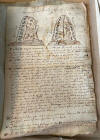 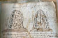 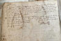
Von Søren Abildgaard (*18.02.1718 - 02.07.1791, Zeichner, Kupferstecher und Geologe)
Bildquelle:
Jellingprojektet -
Lizenz:
Public Domain
findet sich in der Digitale Bildersammlung des Nationalmuseums in Kopenhagen diese außerordentlich wichtige Zeichnung aus dem Jahr 1767 - Lizenz: CC BY-SA
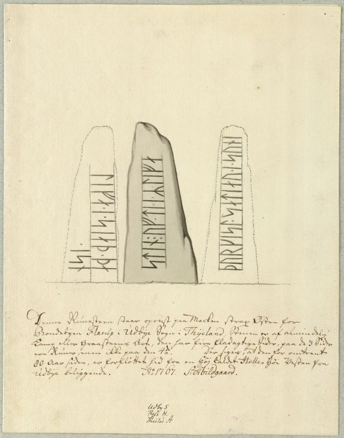
Darunter schrieb er diesen Text:
"Denne Runesteen staaer opreist paa Marken strax Østen for Bondebyen Flarup i Udbye Sogn i Thyeland. Stenen er af almindelig Kamp eller Graasteens Art, den har fire fladagtige Sider, paa de 3 Sider er Runer, men ikke paa den 4de. Der siges, at den for omtrent 80 Aar siden, er forfløttet hid fra en Høy kaldet Helle-Høi Vesten fra Udbye beliggende. A(nn)o 1767. S: Abildgaard"
Übersetzung: "Dieser Runenstein steht aufrecht auf dem Feld unmittelbar östlich der Bauernstadt Flarup in der Gemeinde Ydby in Thy. Der Stein ist vom gewöhnlichen Feld- oder Grausteintyp, er hat vier flache Seiten, wobei auf 3 Seiten sind Runen, aber nicht auf der 4. Seite. Es wird gesagt, dass er vor ungefähr 80 Jahren von einem Hügel namens Helle-Høi westlich aus Ydby hierher gebracht wurde".
Nochmals Erik Pontoppidan hat in seinem weiteren Werk "Den Danske Atlas" aus dem Jahr 1769 in dem Band "Tomus V, 1. Bind, IV. Cap" auf der Seite 468 (b) = (S. 36 in der pdf-Datei) eine Notiz zu dem Runenstein: "Østen for Byen Flarup staar opreist en Runesteen af Kamp eller Graasteen af to Alnes Høide, som har fire fladagtige Sider med Skrift paa de 3 Sider men intet paa den fierde. Der siges, at den sidst i forige Seculo er forflyttet herhid fra en Høi, kladet Helle-Høi, vesten fra Ydbye liggende paa Helleager. Denne Steen findes ikke hos Wormium. Thurgis deder den som har sat Steenen, men videre af Skriften er ikke forstaaeligt."
Übersetzung: "Östlich der Stadt Flarup steht ein Runenstein von Feld- oder grauem Stein von zwei Ellen Höhe, der vier flache Seiten mit Schrift auf drei Seiten hat, aber nichts auf der vierten. Es wird erzählt, dass er am Ende des vorherigen Jahrhunderts von einem Hügel hierher verlegt wurde, vom Helle-Høi, westlich von Ydby auf Helleager liegend. Dieser Stein kommt nicht in Ole Worms Buch vor. Thurgis ist derjenige, der den Stein gesetzt hat, aber der Rest der Inschrift ist unverständlich."
Der Stein verschwand irgendwann danach.
Im Jahr 1833 hat Johan Gustav Liljegren (*27.02.1791 -02.06.1837, schwedischer Nationalarchivar und Archäologe)
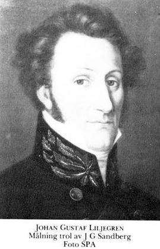
Bildquelle: Schwedisches Reichsarchiv - Lizenz: Public Domainin seinem Buch "Run - Urkunder" diesen Runenstein auf der S. 171 unter der Nr. 1509 mit dem Verweis auf Marmora Danica selectiora sive Inscriptionum" - S. 349 bei Erik Pontoppidan (siehe oben) mit der dort angeführten Inschrift "Thur - - seti - - - stin" aufgeführt.
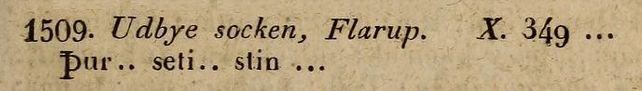
Der Nachlass von Prof. P. G. Thorsen (*07.08.1811 - 06.05.1883, Bibliothekar, Runenforscher und Historiker - link-LIVES - Artikel: Levnedsbeskrivelser af de ved Københavns Universitets Firehundredaarsfest promoverede Doktorer, Illustreret Tidende 1882, Nr. 1235 - vom 27.05.1833 / Grabstein in Varde / Eheschließung in Varde am 19. August 1848),
 Bildquelle: Fotografie
zw. 1863-1900 von Fotograf Budtz Müller
(*26.12.1837 -
30.12.1884) -
Det Kgl. Biblioteks billedsamling - Lizenz:
Public Domain
Bildquelle: Fotografie
zw. 1863-1900 von Fotograf Budtz Müller
(*26.12.1837 -
30.12.1884) -
Det Kgl. Biblioteks billedsamling - Lizenz:
Public Domain
bezeichnet als: P. G. Thorsens optegnelser, tegninger m.m. vedrørende runer og runemindesmærker - überführt aus der Kopenhagener Universitätsbibliothek 1929 - Gemäß Ministerialschreiben vom 04.03.1929; früher benannt als Additamenta 612 kvart - findet sich in der Königlichen Bibliotek unter NKS 3296 kvart (in mehreren einzelnen Pappschachteln). In der Pappschachtel Nr. 7 ist diese handschriftliche Aufzeichnung vom 08. Juli 1838 zu Ydby/Flarup dabei.
Er gibt hier im oberen Bereich die Zeichnung und die Notizen von Søren Abildgaard wieder - siehe unten. Im unteren Bereich geht es um den Bischof Jens Bircherod (*15.01.1658 - 06.12.1708)
Bildquelle: Künstler: Conrad Waumans (19.06.1619-1681) Belgischer Kupferstecher - 1690 - Riijskmuseum Amsterdam - Lizenz: Public Domain
und dessen Tagebucheintrag von 1708 - siehe oben.
Rasmus Henrik Kruse (*07.08.1796 - 30.05.1877, Landschaftsmaler - link-LIVES - Heirat 21.12.1851)
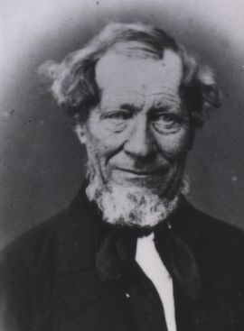
Bildquelle: Det Kgl. Biblioteks billedsamling - Lizenz: Public Domainder auf der kleinen dänischen Ostseeinsel Fur beheimatet war, wanderte unter großen persönlichen Opfern durch Jütland, um antike Denkmäler und andere kulturelle Werte der Vergangenheit aufzuspüren, zu zeichnen und zu beschreiben. Als er starb, hinterließ er seine handschriftlichen Aufzeichnungen mit dem Titel "Nørre Jyllands Mærkværdigheder i det 19. Aarh. Hs. Bd 1-2 (med) Tillæg 1-2". Im Band Tillæg I, 1856, S. 2, berichtet er über seine vergebliche, intensive Suche im Jahr 1841 und nochmals 1856. Dieses Werk wird heute in Kopenhagen, Nationalmuseum, Antikvarisk-Topografisk Arkiv, aufbewahrt. Dort durfte ich am Dienstag, 27.09.2022, zu Gast sein, die vier Bände in Händen halten, studieren und fotografieren.


Er schreibt dort:
"Ydbye Sogn Flarup Bye. I denne
Bye eller tæt østen for Byen, paa en Mark som tilhører Flarupgaard, har paa en
Høj kaldet Hellehøj forhen staaet en Runesten som nu er borte, ligesom Højen
saa at sige er jevnet omtr. lige med Jorden. I Sommeren 1841
foretog jeg
allerførst i Julij Maaned en Reise til Stedet for om mueligt at finde denne
bortkomne Runesten. Resultatat af denne Undersøgelse var som mine Optegnelser
udviser: At jeg en heel Dag forgjæves eftersøgte den, og intet levende Menneske
enten i Flarup eller i de nærmeste Byer, kunde give Oplysning i denne Henseende.
En lille Forhøjning paa Marken blev mig anvist som Pladsen hvor Hellehøj har
lagt. Jeg søgte og i Huusene i den Gaard som Hellehøj tilhører, og i alle
Stendiger i heele Byen, men alt forgjæves.
Den 17. Juni d. A. besøgte jeg
atter Flarup for at foretage en ny Undersøgelse, men samme var ligesaa forgjæves
som den foregaaende. Af en gl. paalidig Gaardmand der i Byen, som er født paa
Stedet og altid har boet i hans Fædrenegaard, erholdt jeg den bestemte
Forsikring, at Runestenen ikke har været ved Højen i de sidste 50 Aar, men hvor
den var henflyttet vidste han ikke. Det eneste Haab som blev tilbage, var, at
Ejeren af Flarupgaard i denne Sommer vilde ombygge Gaardens Bygninger, og den da
mueligt kunde findes iblandt Grundstenene. Jeg talte med ham i denne Henseende,
og efterlod og en skriftlig Begjæring hos ham, men da jeg ikke senere har
modtaget belovet Efterretning, er Stenen ikke fundet.
Sandsynligvis er denne
Runesten for stedse tabt; maaske kan den endog som fleere Runestene herfra
Jylland i sin Tid være overført til Runde Kirkegaard, og der med endeel af disse
gaaet tabt.
Übersetzt: Gemeinde Ydby Ort Flarup. In diesem Ort oder etwas östlich davon, auf einem Feld, das zu Flarupgaard gehörte, befand sich früher ein Runenstein auf einem Hügel namens Hellehøj, der jetzt verschwunden ist, da der Hügel eingeebnet wurde. Im Sommer 1841 unternahm ich erstmals im Monat Juli eine Reise dorthin, um nach Möglichkeit diesen verlorenen Runenstein zu finden. Das Ergebnis dieser Untersuchung war, wie meine Unterlagen zeigen: Ich habe einen ganzen Tag vergeblich danach gesucht, und keine lebende Person, weder in Flarup noch in den nächstgelegenen Städten, konnte diesbezüglich Auskunft geben.
Eine kleine Erhebung auf dem Feld wurde mir als der Platz zugewiesen, auf dem Hellehøj gelegen hat. Ich suchte auch in den Häusern des Hofes, zu dem Hellehøj gehört, und in allen Steinmauern in der Stadt, aber alles vergeblich.
Am 17. Juni 1856 besuchte ich Flarup erneut, um eine neue Untersuchung durchzuführen, aber diese war genauso erfolglos wie die vorherige. Von einem alten zuverlässigen Bauern in der Stadt erhielt ich die Zusicherung, dass der Runenstein seit 50 Jahren nicht mehr auf dem Hügel steht, aber er wusste nicht, wohin er gebracht worden war. Die einzige Hoffnung, die blieb, war, dass der Besitzer von Flarupgaard die Gebäude des Hofes in diesem Sommer wieder aufbauen wollte, und dass man ihn möglicherweise zwischen den Grundsteinen finden würde. Ich habe diesbezüglich mit ihm gesprochen und eine schriftliche Notiz bei ihm hinterlassen, aber da ich die versprochene Nachricht später nicht erhalten habe, wurde der Stein leider nicht gefunden.
Wahrscheinlich ist dieser Runenstein für immer verloren; Es könnte sogar sein, dass er, wie mehrere andere Runensteine aus Jütland, zu seiner Zeit zum Rundetårn (Anm.: in Kopenhagen) überführt wurde und wie einige andere dort verloren ging (Anm.: Beim Großbrand von 1728)."
Dieser Vermutung von Kruse kann man aber ganz sicher widersprechen, da er sich auf ein Königliches Dekret vom 9.2.1652 bezieht (siehe: Nordisk Tidsskrift for Oldkyndighed, Band 1, 1832 - ab S. 324). Von Søren Abildgaard wurde er ja aber noch im Jahr 1767 vor Ort gezeichnet, also auch lange nach dem Großbrand in Kopenhagen im Jahre 1728.
Der Lehrer Jacob Wilken Nissen aus Randers (*02.10.1835 - im Geburtsregister eingetragen als Jacob Wilkesen Nissen - 29.10.1902, Lehrer in Ramten 1859 bis 1895 - link-LIVES)
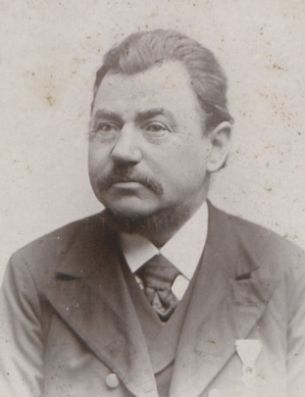
Bildquelle: Det Kgl. Biblioteks billedsamling (von mir zugeschnitten) - Lizenz: Public Domainforderte 1898 das Nationalmuseum in Kopenhage in einem Brief zur Suche nach dem Runenstein auf. Darin schreibt er: "Sagn fra ældre Tider siger, at Stenen i gl. Dage stod paa Hellehøj vest for Ydby. Nu er den brugt til Banebroen tæt ved Ydby St. Om den er sat heel og holden ned eller kløvet vides ikke. Efter al Rimelighed skal man i Vandet for at finde den, o. s. v. -"
Übersetzt: "Legenden aus älteren Zeiten besagen, dass der Stein in der Vorzeit auf dem "Hellehøj" westlich von Ydby stand. Jetzt wird er wohl für die Bahnbrücke in der Nähe des Ydby Bahnhof verwendet. Es ist nicht bekannt, ob er im Ganzen weggetragen und eingebaut wurde oder ob er gespalten ist. Fairerweise muss man sagen, dass man ins Wasser gehen muss, um ihn zu finden usw."
Nachforschungen dazu führten aber zu keinem Ergebnis hinsichtlich des Verbleibs des Runensteins.
Im Jahr 1898 leitete Lehrer Jacob Wilken Nissen auch eine Ausgrabung für das Nationalmuseum in Kopenhagen, bei der die Überreste der Klosterkirche Essenbæk freigelegt wurden.
Durch Lis Jacobsen (*29.01.1882 - 18.06.1961, dänische Runologin und Archäologin -link-LIVES)
 Bildquelle:
Wikipedia - Lizenz:
Public Domain
Bildquelle:
Wikipedia - Lizenz:
Public Domainwurde in den "Aarbøger for nordisk oldkyndighed og historie", Ausgabe 1913, ein Aufsatz auf den S. 106-168 mit dem Titel "Nyfundne Runeindskrifter i Danmark" veröffentlicht. Darin unternimmt sie auf den S. 115-120 einen "Excurs: Flarup-Stenen" und beschäftigt sich mit der Inschrift des verschwundenen Runensteins anhand der Zeichnung von Søren Abildgaard aus dem Jahr 1767. Dieser hat ihrer Auffassung nach auch wichtige Informationen zu seinem ehemaligen Standort erfasst. Da sie aber die Zeichnung von Opitz, der die Leserichtung richtig erkannte, außer Acht ließ, schlug sie eine falsche Lesart und Interpretation vor, indem sie davon ausging, dass die Seite des Steins vor der Rückseite gelesen werden sollte. In dem 1942 erschienenen Werk Danmarks Runeindskrifter wurde dieser Annahme zunächst gefolgt, doch gleichzeitig führte Anders Bæksted Studien über den Stein durch und es war genau die Interaktion zwischen den beiden antiquarischen Zeichnungen, die er als Grundlage für seine Artikel verwendete. Bæksted schlug eine kohärente Lesart und Interpretation vor, bei der er die Rückseite des Steins, die eine Fortsetzung des Textes auf der Vorderseite darstellte, vor der Seite des Steins las: "þurkisl : sati : auk : suniR : lifa : a : staþ : þansi: stin: uftiR: lifa" Thorgisl setzte zusammen mit Leifis Söhnen an diesem Ort den Stein für Leifi".
Marius Kristensen (*27.04.1869 - 02.11.1941, Dr. phil., Hochschullehrer, Dänischer Sprachforscher - link-LIVES)
 Bildquelle:
Den
store danske - Lizenz:
Public Domain
Bildquelle:
Den
store danske - Lizenz:
Public Domain
hat in dem Buch "Nordisk Tidsskrift for Filologi, Fjerde række, Femte binds første hæfte, Kopenhagen, 1916", auf den S. 9-10, einen kurzen Beitrag zu dem Runenstein verfasst. Dort heißt es übersetzt: "Im Reisetagebuch von Søren Abildgaard, Ny kgl. Sammlung, 201 c, 8vo, findet sich eine Abschrift der Runen, die auf dem Flarup-Stein geschrieben sind, der vor etwa 80 Jahren vom Hellehøj verlegt wurde und nun östlich von Flarup in der Ydby Gemeinde steht. Die Abschrift stimmt mit der Zeichnung überein, nur dass die Punkte auf S. 2 nach "stin" sind (nur zwei Punkte), nichts nach f, nach den beiden geraden Linien (also | | ), aber nicht nach r. Da die Zeichnung nach freundlicher Nachricht von Frau Jacobsen, signiert ist mit: « Anno 1767. S. Abildgaard », dürfte das Tagebuch aus demselben Jahr stammen."
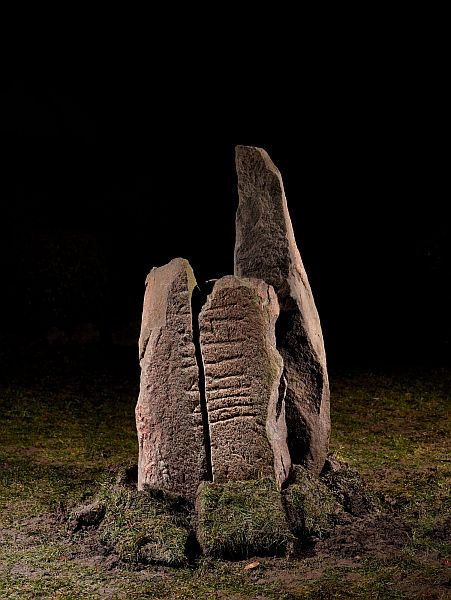
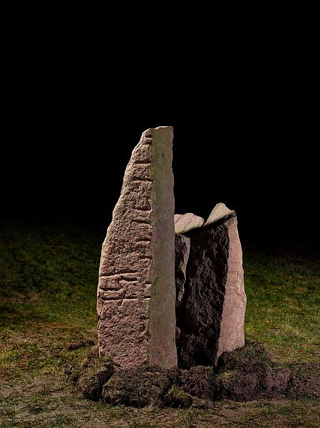
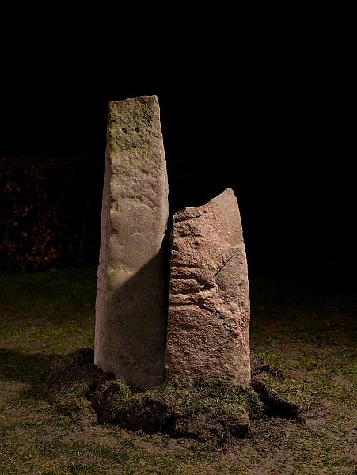
Zunächst wurden die Bruchstücke im Garten des Fundortes aufgestellt. Dort wurden am 17.03.2016 von Roberto Fortuna im Auftrag des Nationalmuseums in Kopenhagen diese herausragenden Fotos gefertigt.
Der digitalen Sammlung des Nationalmuseums Kopenhagen entnommen - Lizenz: CC-BY-SA
Einen ausführlichen Bericht in dänischer Sprache zu der Historie des Runensteins mit dem Titel "Thylands Runestene", erschienen in "Landet mod Nordvest - Thy og Vester Han Herred, Bidrag til Belysning af Egnens Forhold i Fortid og Nutid, Bind 1, 1946" - Seite 69-84 verdanken wir Anders Bæksted (*16.08.1906 - 18.06.1968, dänischer Runologe), aus dem ich auch einen großen Teil meiner hier wiedergegebenen Informationen entnommen habe.
Eine weitere wichtige Abhandlung zur Thematik von ihm mit dem Titel "Flarup Runestenen" findet sich im Historisk Aarbog for Thy og Vester Hanherred, 1941 - S. 89 bis 107.
Ein Zeitungsbericht vom 17.03.2016 aus dem Internet in dänischer Sprache, aber mit sehr vielen Fotos der Entdeckung finden sich hier.
Im Oktober 2013 wurde eine vom Steinmetz Erik Jensen gefertigte Kopie des zu der Zeit noch verschwundenen Runensteins errichtet. Die Herstellung und Errichtung wurde von zahlreichen örtlichen Institutionen gefördert. Die Kopie steht heute im Ydbyvej 170 B in Flarup. Ein Bericht dazu in dänischer Sprache findet sich hier. Dieser wurde nach der Entdeckung der drei Bruchstücke entsprechend ergänzt.
Im Rahmen meiner 2022er Wikingertour war ich am Mittwoch, 01.06.2022, vor Ort. Wenigstens von der Kopie konnte ich Fotos erstellen, da das Original in einem Lager in Kopenhagen - als Gegenstand von nationaler Bedeutung, als "Danefæ" - verwahrt wird.
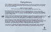 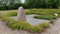 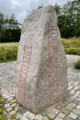 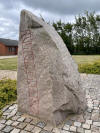 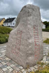 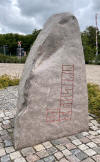 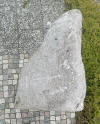


Im "Historisk Årbog for Thy og Vester Han Herred, 2016" findet sich auf den Seiten 7-19 der reich bebilderte Artikel "En genfundet runesten" von Charlotte Boje H. Andersen und Lisbeth M. Imer.
Ein Bericht in dänischer Sprache über den Fund der Bruchstücke 2015 kann man auf den Webseiten des Museums abrufen.
Die Informationen zu diesem Runenstein aus der dänischen Runendatenbank finden sich hier.
In der Datenbank "Fund og Fortidsminder" findet sich dieser Eintrag, der auf den ursprünglichen Standort abhebt.
Über diesen Link finden sich zu dem Runenstein Informationen des Forschungsprojektes "Runes" der Akademie der Wissenschaften zu Göttingen.